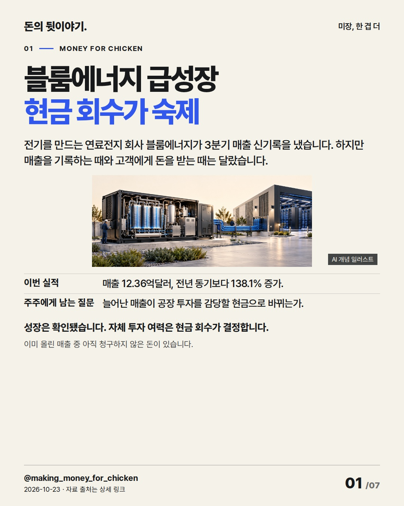
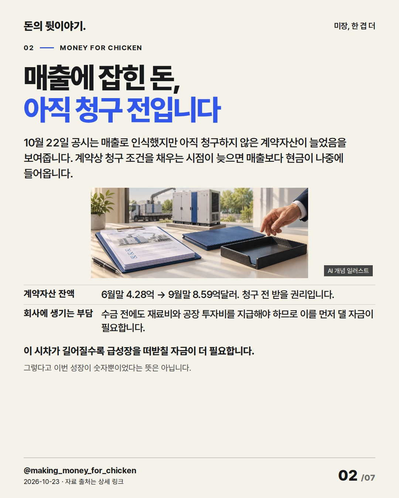
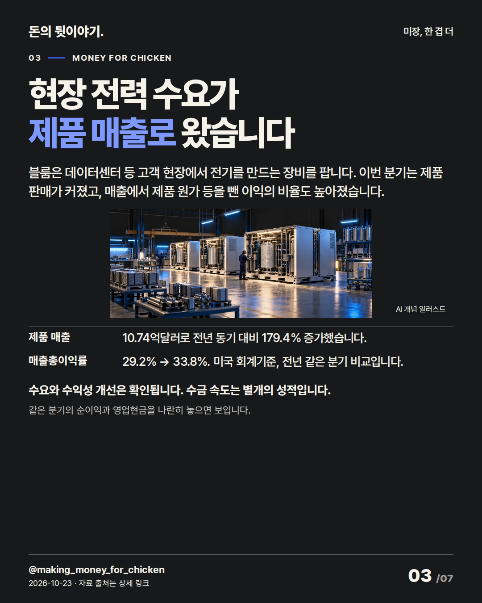
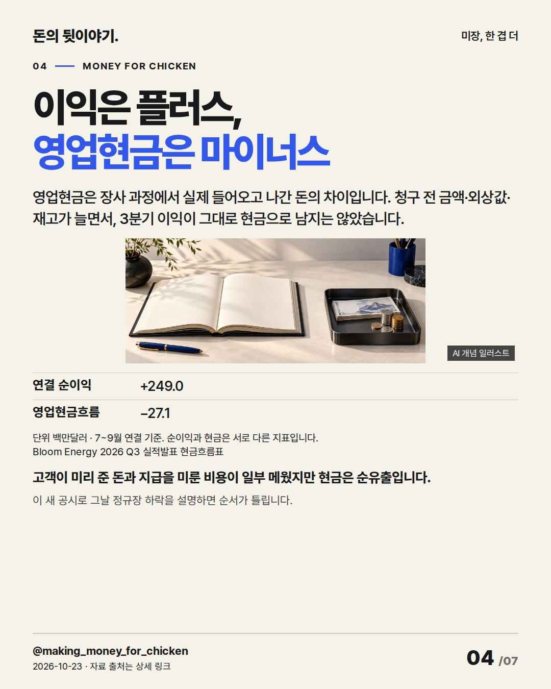
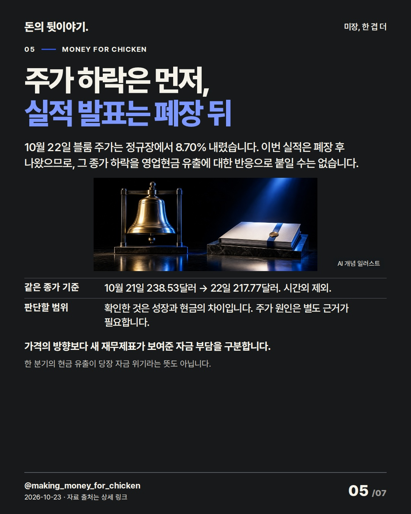
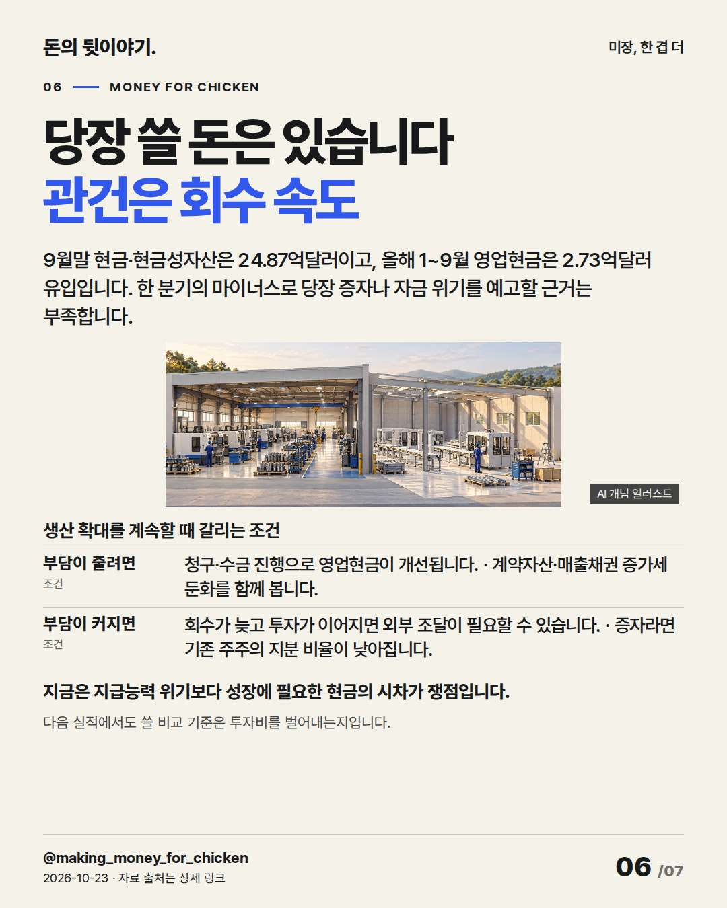
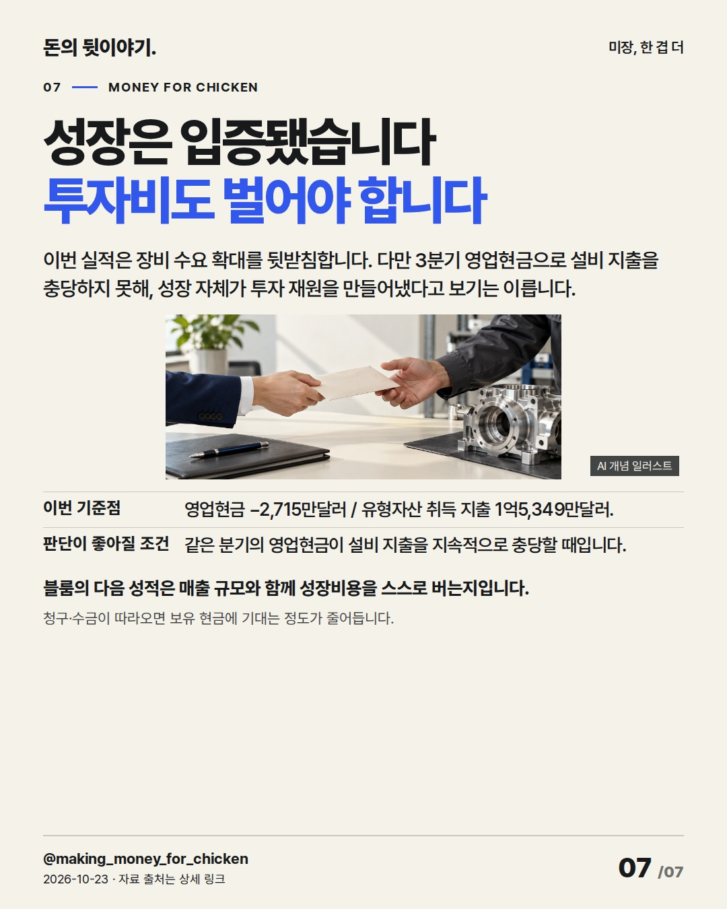

블룸에너지의 매출 신기록을 읽을 때는 아직 청구하지 않은 돈과 실제 영업현금을 함께 봐야 합니다. 이번 성장의 다음 시험은 공장 투자비를 스스로 벌어내는가입니다. #블룸에너지 #미국주식 #기업실적

전기를 만드는 연료전지 회사 블룸에너지가 3분기 매출 신기록을 냈습니다. 하지만 매출을 기록하는 때와 고객에게 돈을 받는 때는 달랐습니다.
성장은 확인됐습니다. 자체 투자 여력은 현금 회수가 결정합니다. 이미 올린 매출 중 아직 청구하지 않은 돈이 있습니다.
AI 생성 개념 일러스트 · 실제 현장이나 공식 제품 사진이 아닙니다.
10월 22일 공시는 매출로 인식했지만 아직 청구하지 않은 계약자산이 늘었음을 보여줍니다. 계약상 청구 조건을 채우는 시점이 늦으면 매출보다 현금이 나중에 들어옵니다.
이 시차가 길어질수록 급성장을 떠받칠 자금이 더 필요합니다. 그렇다고 이번 성장이 숫자뿐이었다는 뜻은 아닙니다.
AI 생성 개념 일러스트 · 실제 현장이나 공식 제품 사진이 아닙니다.
블룸은 데이터센터 등 고객 현장에서 전기를 만드는 장비를 팝니다. 이번 분기는 제품 판매가 커졌고, 매출에서 제품 원가 등을 뺀 이익의 비율도 높아졌습니다.
수요와 수익성 개선은 확인됩니다. 수금 속도는 별개의 성적입니다. 같은 분기의 순이익과 영업현금을 나란히 놓으면 보입니다.
AI 생성 개념 일러스트 · 실제 현장이나 공식 제품 사진이 아닙니다.
영업현금은 장사 과정에서 실제 들어오고 나간 돈의 차이입니다. 청구 전 금액·외상값·재고가 늘면서, 3분기 이익이 그대로 현금으로 남지는 않았습니다.
고객이 미리 준 돈과 지급을 미룬 비용이 일부 메웠지만 현금은 순유출입니다. 이 새 공시로 그날 정규장 하락을 설명하면 순서가 틀립니다. 백만달러 · Bloom Energy 2026 Q3 실적발표 현금흐름표 · 7~9월 연결 기준. 순이익과 현금은 서로 다른 지표입니다.
AI 생성 개념 일러스트 · 실제 현장이나 공식 제품 사진이 아닙니다.
10월 22일 블룸 주가는 정규장에서 8.70% 내렸습니다. 이번 실적은 폐장 후 나왔으므로, 그 종가 하락을 영업현금 유출에 대한 반응으로 붙일 수는 없습니다.
가격의 방향보다 새 재무제표가 보여준 자금 부담을 구분합니다. 한 분기의 현금 유출이 당장 자금 위기라는 뜻도 아닙니다.
AI 생성 개념 일러스트 · 실제 현장이나 공식 제품 사진이 아닙니다.
9월말 현금·현금성자산은 24.87억달러이고, 올해 1~9월 영업현금은 2.73억달러 유입입니다. 한 분기의 마이너스로 당장 증자나 자금 위기를 예고할 근거는 부족합니다.
지금은 지급능력 위기보다 성장에 필요한 현금의 시차가 쟁점입니다. 다음 실적에서도 쓸 비교 기준은 투자비를 벌어내는지입니다. 생산 확대를 계속할 때 갈리는 조건
AI 생성 개념 일러스트 · 실제 현장이나 공식 제품 사진이 아닙니다.
이번 실적은 장비 수요 확대를 뒷받침합니다. 다만 3분기 영업현금으로 설비 지출을 충당하지 못해, 성장 자체가 투자 재원을 만들어냈다고 보기는 이릅니다.
블룸의 다음 성적은 매출 규모와 함께 성장비용을 스스로 버는지입니다. 청구·수금이 따라오면 보유 현금에 기대는 정도가 줄어듭니다.
AI 생성 개념 일러스트 · 실제 현장이나 공식 제품 사진이 아닙니다.{
"improvement": "핵심은 '성장은 확인됐지만 수금이 따라와야 투자비를 스스로 댈 수 있다'. 2장에 청구 조건과 선지출의 연결, 6장에 외부 조달이 주주에게 전달되는 조건부 지분 희석을 보강했다. 제목은 현금 회수 숙제를 채택; 숫자만 남는 성장률 제목과 근거 없는 현금 위기 제목은 제외했다.",
"reason": "Morning Brew Shorty18 제작 설명(명확성·맥락)과 Bloomberg 9/5 AI 가격 선택 재현 캡션(imginn.com/p/Dc6jiDuoxro/) 비교. 전 장 미열람. Socialpruf Instagram 10/23 KST 조회: 각각 228만·652만(화면 10/22). 사례는 편집 참고만.",
"application": "최근 GM·SMCI·인도네시아·한은·이란의 상세 원고·실제 17장·편집 기록을 대조했다. 1~2장 매출→청구→수금→투자비, 4장 순이익과 현금, 6장 주주 영향, 7장 자체 투자재원으로 이어진다. 재검수에서 검수 지연을 사실로 추정하지 않고 계약상 청구 조건으로 고쳤다.",
"avoided_repetition": "SMCI의 타기업 일정 확장, GM의 현금=연료 비유와 이란의 일반적 확인 마무리를 피했다. EPS·연간 전망·타기업 수혜는 덜었다. 인사이트 미확보로 독해·가독성만 평가. 다음 보완은 같은 형식·경과 시간의 저장/도달·공유/도달 확보 후 비교."
}투자 참고용 · 매수·매도 권유 아님.